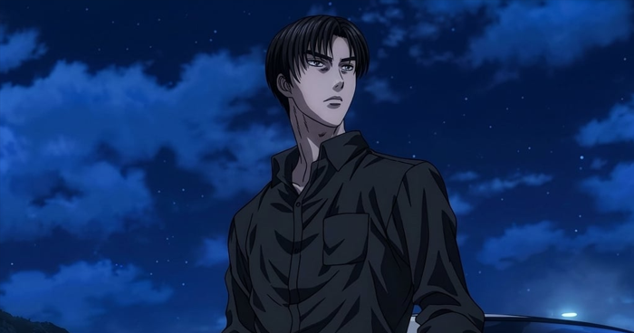
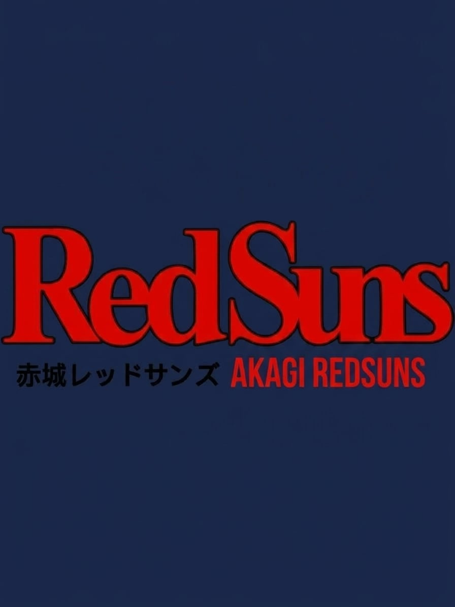

Discover Initial D Cars
Explore some of the most iconic cars featured in the anime Initial D. Learn about the drivers, specifications, performance, and unique characteristics that make each car memorable on the mountain roads.
Explore some of the most iconic cars featured in the anime Initial D. Learn about the drivers, specifications, performance, and unique characteristics that make each car memorable on the mountain roads.
It is driven by Takumi Fujiwara as the main protagonist and ace driver of the Akina Speed Stars and later Project D in Initial D. Powered by a 1.6L 4A-GE naturally aspirated inline-four, the Toyota AE86 Panda Trueno features FR (front-engine, rear-wheel drive) and a 5-speed manual transmission, making it a lightweight, agile, and highly responsive machine renowned for its drifting performance.
It is driven by Hideo Minagawa as a member of Racing Team Katagiri Street Version in Initial D. Powered by a 3.0L 2JZ-GTE twin-turbo inline-six, the Supra features FR (front-engine, rear-wheel drive) and a 6-speed manual transmission, making it a high-performance machine built for speed and power.

Explore the famous mountain passes and racing locations featured throughout the series.
Learn More